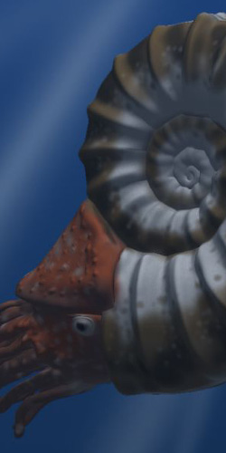

Meet the king of the Cretaceous!

Tyrannosaurus(meaning "tyrant lizard") is a theropod dinosaur. The species Tyrannosaurus rex (rex meaning "king" in Latin), commonly abbreviated to T. rex, is a fixture in popular culture.
Often known as the "T-Rex" in popular cutlure, like seen in the movie Jurassic Park. They used to live in what is now the western pat of North America. Fossils of these huge creatures were dated to be from 67 to 65.5 million years ago. A really long time.
The size of the Tyrannosaurus was about 6.8 metric tons, 40 ft in length and 13 ft in height. Making it one of the largest dinosaurs of its time and most defiantly one of the largest carnivores. One of the main features of this huge Dino was its gigantic head and its tiny arms. its still unsure was to what the arms were actually used for because they were so tiny. A lot to the T-rex`s posture and probably how they ran is based off of the common day chicken. Most dinosaurs are descendants of common day birds.